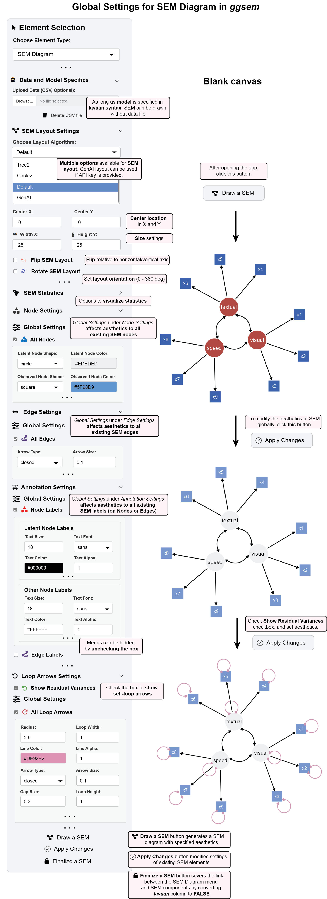

4 SEM Diagram Functions Overview
The SEM Diagram module in ggsem provides a comprehensive environment for creating, customizing, and finalizing structural equation models with interactive parameter visualization that bridges statistical modeling and visual design.
4.1 Model Specification & Data Input
ggsem provides multiple, flexible pathways to define your Structural Equation Model, catering to both traditionalists and those seeking a more guided, AI-assisted approach.
4.1.1 Lavaan Syntax Input
For users already familiar with SEM, the Lavaan Syntax Input offers a direct and powerful interface. A sample model string is pre-loaded, which you can freely modify, replace, or use as a template for your own syntax.
ggsem uses the standard syntax from the widely adopted lavaan package in R. This syntax allows you to define your model using a few key operators, which ggsem then translates directly into visual elements on the diagram:
=~(Measured By): Defines a latent variable and the observed variables that measure it.Example:
visual =~ x1 + x2 + x3means the latent variable “visual” is measured by the three observed indicators x1, x2, and x3.Visual: Drawn as a one-way arrow from the latent variable to each of its indicators.
~(Regressed On): Defines a regression path between variables.Example:
y ~ x1 + x2means variable “y” is regressed on predictors “x1” and “x2”.Visual: Drawn as a one-way arrow from the predictor to the outcome variable.
~~(Covariance/Correlation): Defines a covariance or correlation between two variables.Example:
visual ~~ textualallows the latent variables “visual” and “textual” to covary.Visual: Drawn as a curved, two-way arrow between the variables.
This method supports the full spectrum of lavaan model types, including:
SEM: Full structural equation models with latent and observed variables
CFA: Confirmatory Factor Analysis
EFA: Exploratory Factor Analysis (with controls for the number of factors and rotation methods)
Growth: Latent growth curve models
4.1.2 Data Integration
You can upload your data as a CSV file, which ggsem interprets as a standard data frame, compatible with the lavaan package. The app ensures your data is correctly paired with your model—whether written by hand or generated by the AI—for estimation and visualization.
4.1.2.1 Data Format Requirements
Your CSV file should be structured as a typical dataset for statistical analysis, following the same format used by the lavaan package. Here is an example from the built-in HolzingerSwineford1939 dataset:
library(lavaan)
head(HolzingerSwineford1939) # first six rows id sex ageyr agemo school grade x1 x2 x3 x4 x5 x6
1 1 1 13 1 Pasteur 7 3.333333 7.75 0.375 2.333333 5.75 1.2857143
2 2 2 13 7 Pasteur 7 5.333333 5.25 2.125 1.666667 3.00 1.2857143
3 3 2 13 1 Pasteur 7 4.500000 5.25 1.875 1.000000 1.75 0.4285714
4 4 1 13 2 Pasteur 7 5.333333 7.75 3.000 2.666667 4.50 2.4285714
5 5 2 12 2 Pasteur 7 4.833333 4.75 0.875 2.666667 4.00 2.5714286
6 6 2 14 1 Pasteur 7 5.333333 5.00 2.250 1.000000 3.00 0.8571429
x7 x8 x9
1 3.391304 5.75 6.361111
2 3.782609 6.25 7.916667
3 3.260870 3.90 4.416667
4 3.000000 5.30 4.861111
5 3.695652 6.30 5.916667
6 4.347826 6.65 7.500000Key Structure Notes:
The first column can be a unique identifier (e.g.,
id)Subsequent columns contain your measured variables (e.g.,
x1tox9)Column names should match the variable names used in your
lavaansyntaxMissing data should be represented as blank cells or
NAThe file should not contain any special formatting or merged cells
Alternatively, you can test this with a sample dataset by running in R:
df1 <- read.csv('https://www.smin95.com/HolzingerSwineford1939.csv', check.names = FALSE)
head(df1) id sex ageyr agemo school grade x1 x2 x3 x4 x5 x6
1 1 1 13 1 Pasteur 7 3.333333 7.75 0.375 2.333333 5.75 1.2857143
2 2 2 13 7 Pasteur 7 5.333333 5.25 2.125 1.666667 3.00 1.2857143
3 3 2 13 1 Pasteur 7 4.500000 5.25 1.875 1.000000 1.75 0.4285714
4 4 1 13 2 Pasteur 7 5.333333 7.75 3.000 2.666667 4.50 2.4285714
5 5 2 12 2 Pasteur 7 4.833333 4.75 0.875 2.666667 4.00 2.5714286
6 6 2 14 1 Pasteur 7 5.333333 5.00 2.250 1.000000 3.00 0.8571429
x7 x8 x9
1 3.391304 5.75 6.361111
2 3.782609 6.25 7.916667
3 3.260870 3.90 4.416667
4 3.000000 5.30 4.861111
5 3.695652 6.30 5.916667
6 4.347826 6.65 7.5000004.1.2.2 Flexible Workflow
These input methods are not mutually exclusive. You can:
Use the AI to generate a base model from your data and then refine the syntax manually
Write your own syntax and use the AI for suggestions on improvement or alternative specifications
Iterate between AI suggestions and manual edits to rapidly develop and test different model structures
This flexibility supports various user preferences:
Direct Users: Manually select model type and upload data directly in the app
Expert Users: Analyze models with preferred packages, then load results into
ggsemfor visualization and layout optimization using AI suggestions
4.2 The Interactive Workflow Cycle
ggsem operates on a three-stage workflow that maintains a clear distinction between exploratory design and finalized output, giving you complete control over the entire SEM creation process.
4.2.1 The Three-Stage Process
Stage 1: “Draw a SEM” - Initial Generation
In this stage, you can draw SEM by clicking the Draw a SEM button, which generates the initial diagram from your lavaan model syntax and data (optional in the app) and has several features:
Automatic Layout: Applies your chosen layout algorithm (Tree, Circle, Spring, etc.) to create a logically structured diagram
Statistical Integration: Populates the diagram with parameter estimates, significance indicators, and fit statistics based on your actual data
Editable State: All generated elements are marked with
lavaan = TRUEin the output tables, keeping them ready for further modification in the SEM Diagram dynamic menu.
Stage 2: “Apply Changes” - Visual Editing Over SEM Elements
This stage focuses on applying broad visual customizations across your entire diagram. When you press “Apply Changes”, ggsem performs comprehensive visual updates while maintaining statistical integrity.
A. Global Node Settings Apply consistent styling across all nodes by type:
Type-Specific Styling: Separate controls for latent, observed, and intercept nodes
Shape Customization: Circle, square, rectangle, oval, triangle, and diamond shapes with adjustable width-height ratios
Size & Color Control: Independent adjustments to node sizes, colors, border properties, and transparency levels
B. Global Edge Settings Standardize the appearance of all connections:
Arrow Customization: Open/closed types with adjustable size and positioning
Line Properties: Color, width, transparency, and style controls (solid, dashed, dotted)
Endpoint Spacing: Adjusts spacing between edges and nodes to prevent visual crowding
Covariance Curvature: Controls curvature magnitude, rotation, and asymmetry for two-way arrows
C. Global Annotation Settings Maintain consistent text formatting throughout:
Node Labels: Type-specific styling with different text properties for latent vs. observed variable labels
Edge Labels: Automatic display of model estimates with consistent formatting
Text Properties: Font family, size, color, transparency, angle, and fontface customization
D. Global Self-loop Arrow Settings Determine the style of residual arrows:
Show Residual Variances checkbox show self-loop residual arrows
The aesthetics can then be edited globally via All Loop Arrows submenu
Stage 3: “Finalize a SEM” - SEM Options Lock
Parametric Disconnection: Severs the live connection between statistical parameters and visual elements
Edit Protection: Changes
lavaancolumn toFALSEin output tables, making elements immune to further “Apply Changes” operations in the SEM Diagram menu. Rows will become green when lavaan is set toFALSE; green rows are modifiable using options in the dynamic Aesthetic Grouping menu in Element Type.Export Preparation: Optimizes the diagram for high-quality publication output
Statistical Synchronization (Preserved): While focusing on visual changes, the system maintains:
Parameter Estimate Updates: All statistical annotations reflect current model values
Significance Indicators: Asterisks and highlighting remain accurate
Live Connection: The vital link between statistical parameters and visual representation is preserved
Editability Preservation: All elements remain editable (lavaan = TRUE) for continuous refinement.
4.3 Example 1: Creating and Styling an SEM Diagram

This example walks through generating a basic SEM diagram and applying global aesthetic changes.
Step 1: Launch and Initial Setup
Open the ggsem application.
In the sidebar, ensure Element Type is set to “SEM Diagram”.
In the Lavaan Syntax input box, you will find a pre-loaded example model. You can use this for the demonstration or replace it with your own
lavaansyntax.- Note: An SEM can be drawn from the syntax alone; uploading a data file is optional for visualization.
Step 2: Generate the Initial Diagram
- Click the “Draw a SEM” button. * The app will process your model and display the initial path diagram in the main panel.
Step 3 (Optional): Choose a Layout
Before or after drawing, you can explore the “SEM Layout Settings” panel
Use the “Choose Layout Algorithm” dropdown to select a different visual arrangement (e.g., Tree, Circle, Spring).
You can also flip or rotate the layout globally.
Step 4: Apply Global Node Styles
Navigate to the “Node Settings” panel and open the “Global Settings” section.
Make the following changes to apply a new color scheme to all nodes: * Latent Node Color: Set to
#EDEDED(light gray) * Observed Node Color: Set to#5F98D9(blue)
Step 5: Apply Global Label Styles
Navigate to the “Annotation Settings” panel and open the “Global Settings” section.
To change the text color for all node labels, locate the “Node Labels” controls and set: * Text Color: Set to
#000000(black)
Step 6: Execute the Changes
- To apply all the global aesthetic changes from Steps 4 and 5 to the existing diagram, click the “Apply Changes” button. * The diagram will update instantly, now featuring your new color scheme.
4.4 Interactive Parameter Control: Granular Customization
For precise, element-level control, ggsem offers Interactive Parameter Control that transforms your SEM into a dynamic visualization environment.
Dynamic Parameter Selection: A dropdown menu is automatically populated with every free parameter in your model (factor loadings, regressions, covariances, variances).
4.4.1 Granular Element Manipulation:
Nodes:
Nodes Aesthetics: Select specific nodes to modify color, size, shape, and border properties
Nodes XY Positions: Fine-tune individual node positions (and associated text labels) with XY coordinate controls
Latent Group XY Positions: Shift entire latent variable groups as cohesive units
- This shift affects nodes, edge labels, node labels within the selected group.
Latent Group Orientation: Rotate latent groups and their associated observed variables for optimal layout.
- This shift affects nodes, edge labels, node labels within the selected group.
Edges:
Edges Aesthetics: Modify specific paths for color, width, style, etc of selected edges
Edges Curvature: Change the curvature of selected edges
Edges XY Positions: Precise control over edge start and end points of selected edges
Annotations:
Node Labels: Modify the text style on selected nodes
Node Labels XY Positions: Modify the location of text labels on selected nodes
Node Labels Text: Change the text themselves on selected nodes
Edge Labels: Modify the text style on edges
Edge Labels XY Positions: Modify the location of text labels on selected nodes
Edge Labels Text: Change the text themselves on selected edges
Loop Arrows:
Loop Arrow Aesthetics: Modify the aesthetics of selected self-loop arrows
Loop Arrow XY Positions: Modify the XY position of selected self-loop arrows
Loop Removal: Selectively display self-loop arrows to avoid from over-crowding the figure
Loop Arrow Location: Modify the relative location of the self-loop arrow to node (0-360 degrees), with pre-specified eight direction choices
Loop Arrow Labels: Modify the text style on selected self-loop arrows
Loop Label XY Positions: Modify the location of text labels on selected self-loop arrows
Loop Labels Text: Change the text themselves on selected self-loop arrows
This granular control system is particularly valuable for exploratory data analysis and creating publication-quality diagrams where every element requires precise styling. Users are encouraged to explore the app on their own to fully learn how these changes work.
4.5 Example 2: Parameter-Specific Modifications in SEM Diagram
This example demonstrates how to make granular changes to individual elements of an existing SEM diagram.
For this example, download data from https://www.smin95.com/HolzingerSwineford1939.csv, and load it on the ggsem app immediately after launching. Or you can directly load the sample data after launching the app.

Step 1: Load Your Data and Generate the Diagram
Download the dataset in CSV format or use pre-loaded sample data (
Holzinger & Swinefold) in the app.In the
ggsemapp, with Element Type set to “SEM Diagram”, upload your CSV file using the “Upload Data” button.Ensure your
lavaanmodel syntax is entered in the main text area.Click the “Draw a SEM” button to generate the initial diagram with the data.
Step 2: Modify a Specific Node
Navigate to the “Node Settings” panel and find the “Parameter-Specific Modifications” section.
Check the box for “Nodes Aesthetics” to expand its menu.
In the “Node to Modify” dropdown, select the specific node you wish to change (e.g.,
x8).Set the Node Color to
#B5CEE5. This change will only affect thex8node.
Step 3: Modify a Specific Edge
Navigate to the “Edge Settings” panel and find the “Parameter-Specific Modifications” section.
Check the box for “Edges Aesthetics” to expand its menu.
In the “Edge to Modify” dropdown, select the specific path you wish to change (e.g.,
speed to x8).Set the following properties: * Edge Color:
#91BDC7* Line Color Type:Single* Note: The “Gradient” option is available to create color-blended paths for further emphasis.
Step 4: Modify a Specific Label
Navigate to the “Annotation Settings” panel and find the “Parameter-Specific Modifications” section.
Check the box for “Node Labels Aesthetics” to expand its menu.
In the “Node to Modify” dropdown, select the node whose label you wish to change (e.g.,
x8).Set the Text Color to
#000000(black).
** Step 5: Add Self-Loop Arrows to Show Residual**
Navigate to the “Loop Arrows Settings” panel, check the box for “Show Residual Variances, and find the”Parameter-Specific Modifications”** section.
Check the box for “Loop Arrow Aesthetics” to expand its menu.
In the “Node to Modify” dropdown, select the node whose label you wish to change (e.g.,
x8). Set the Line Color to#0F89BA(blue).Check the box for Loop Removal, and remove three loops by choosing nodes in the dropdown (Select loops to remove:
visual,textual,speed).
Step 6: Apply All Granular Changes
21 To execute all the parameter-specific modifications from Steps 2, 3, and 4, click the “Apply Changes” button. * The diagram will update, now highlighting the specific node x8, its connecting edge, and its label with the new colors.
Step 7: Finalize the Diagram and Test Protection
- Once satisfied with all modifications, click the “Finalize a SEM” button to lock the diagram.
- Notice the corresponding rows in the output tables now have a green background, indicating they are locked.
- To verify the lock is active, try making another aesthetic change (e.g., change the color of node x8 again) and click “Apply Changes”.
- You will observe that the diagram no longer changes, confirming that the locked elements are now protected from modifications via the SEM menu. (Locked elements can still be modified using the Aesthetic Grouping menu if needed).
4.6 Summary: The SEM Visualization Workflow
The ggsem application provides a structured, three-stage workflow for creating, customizing, and finalizing Structural Equation Model diagrams.
Core Workflow:
Generation (“Draw a SEM”): Begin by creating an initial diagram from your lavaan syntax, with or without data. The app automatically applies a layout and populates the diagram with statistical estimates, marking all elements as editable.
Customization (“Apply Changes”): This is the core interactive phase, where you refine your diagram through two complementary approaches:
Global Styling: Apply consistent aesthetic changes to all elements of a type (e.g., color all latent nodes gray).
Parameter-Specific Control: Make granular modifications to individual nodes, edges, and labels for precise, highlight-focused adjustments.
Finalization (“Finalize a SEM”): Lock the diagram to sever the live parametric connection. This protects your work from accidental changes and prepares it for high-quality export, while still allowing advanced edits via the Aesthetic Grouping menu.